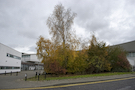
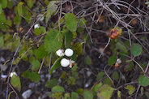
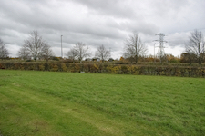

front3.jpg
❮
❯
Ecology in ITB
Loraine is a lecture of Horticulture and Biodiversity at ITB.
Ecology is the study of a habitat or environment which is effected by the cycle of nature e.g. a bird lays and egg in a nest, the birds in the eggs hatch, the feed on the larvae living on the tree leaves or worms in the soil. This soil is effected by the nitrogen cycle and air pollution of the surrounding environment. Life cycle of a habitat.

Itb has a large biodiverse habitat. There are Mediterranean flowers suitable for cooking on south facing banks, a circle of clean growing saplings in the heart of the campus by D block, large meadow and grass lands all of which allow fungi, birds such as buzzards, wrens and robins live and grow.

These habitats make home for many flora and fauna habitual to the Tolka Vally/Corduff/ Blanchardstown area of which ITB is situated.
The horticultural sector of ITB ( an area of study for students) have an aim to defeat climate change in the area by seeing ITB clean and ecologically friendly.With this growing ecosystem within ITB, the outter area ecosystem becomes cleaner. This is a little step to their goals on defeating climate change. They majority of these ecological aspects date back from the 1900's when our campus was an estate house owned by British farmers, the main focus for their up keep here in itb.
